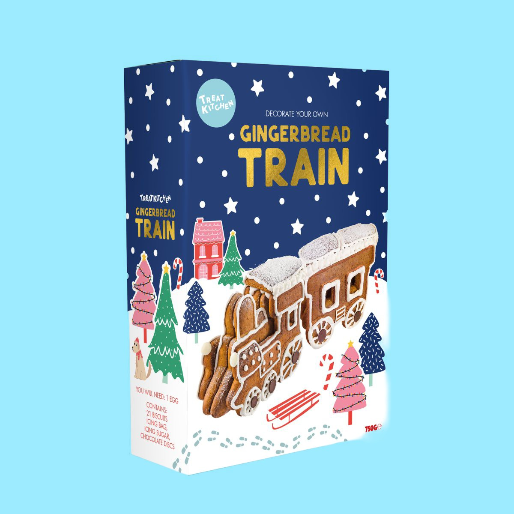

Treat KitchenChocolate Gift
£14.00
Price checked 22 Nov, 06:01. Prices can change.
Create a fun centrepiece with Treat Kitchen’s Gingerbread Train Kit, the perfect festive baking gift and family activity. This bestselling kit includes pre-baked gingerbread pieces, chocolate buttons for decorating, and icing mix—just add a whisked egg white to bind everything together. Ideal for train enthusiasts, it’s easy, fun, and suitable for all ages. Build, decorate, and enjoy your own charming gingerbread train without the fuss of baking from scratch. Whether for cosy nights in or gifting, this kit delivers creativity, quality, and seasonal joy in every bite. INGREDIENTS Gingerbread Pieces (WHEAT Flour, Invert Sugar Syrup: Glucose-fructose Syrup, Glucose, Sugar; RYE Flour, Sugar, Vegetable Fat: Palm; Raising Agents: Sodium Carbonates, Ammonium Carbonates, Diphosphates; Sugar Powder, Apple Jam: Apple Puree, Sugar, Preservative (Sodium Benzoate); Spice Mixture: Cinnamon, Coriander, Cocoa Powder, Cloves, Ginger, Black Pepper, Cardamom, Allspice; Preservative: Potassium Sorbate; Salt, Acidity Regulator: Lactic Acid; Baking Improver: Emulsifiers (E481, Е472e), Enzymatic Protein (Amylase and Lipase) Normalized by Flour (WHEAT) and Starch (Corn and WHEAT), Anti-caking Agents: Calcium Carbonate, Calcium Phosphates, Silicone Dioxide); Sugar Powder, Brown Discs (Sugar, Vegetable Fat: Palm Kernel Stearin; Cocoa Powder, Whey Powder (MILK), Emulsifier: SOYA Lecithin; Salt, Flavourings); White Discs (Sugar, Vegetable Fat: Palm Kernel Stearin; Whey Powder (MILK), Lactose (MILK), Dextrose, Emulsifier: SOYA Lecithin; Salt, Flavourings). Allergy Advice: For allergens including cereals containing gluten, see ingredients in CAPITALS. For allergens including cereals containing gluten, see ingredients in BOLD. May contain PEANUTS, SESAME and EGG. Our cards and gifts arrive seperately as they come from different locations
See it at ScribblerThis is an affiliate link (#ad): we may earn a small commission if you buy, at no extra cost to you. Prices and stock change often, so check the current price on Scribbler.